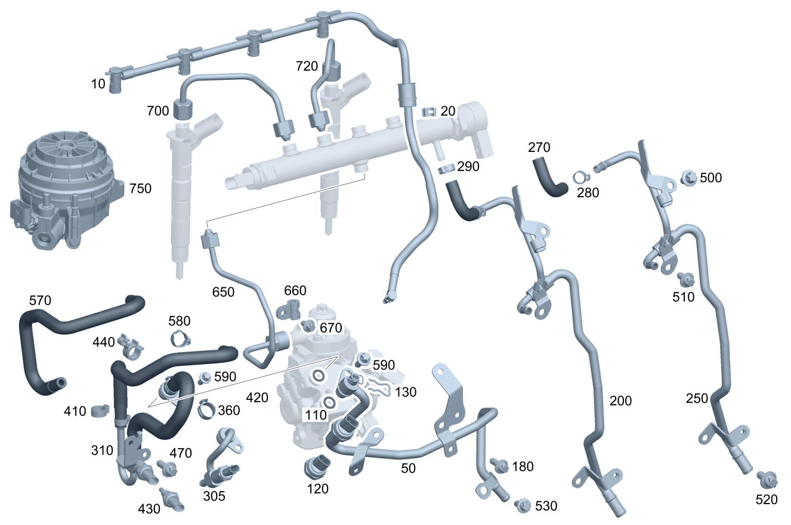

| № | Артикул | Название | Кол. | Примечание |
|---|---|---|---|---|
| 10 | A 654 070 00 32 | Дренажная трубка (LEAK OIL LINE) | 1 | |
| 20 | A 001 546 00 43 | Держатель (HOLDER) | 1 | На дренажной трубке |
| 50 | A 654 070 14 01 | Топливопровод (FUEL LINE) | 1 | |
| 110 | A 027 997 23 45 | - Кольцевая прокладка (O-RING) | 1 | |
| 120 | A 000 905 06 03 | - Датчик давления (PRESSURE SENSOR) | 1 | Трубопровод низкого давления |
| 130 | A 001 991 58 70 | - Пружинная скоба (SPRING CLIP) | 1 | |
| 180 | N 910143 006001 | Винт с 6-гр. глвк (HEXALOBULAR SCREW) | 1 | Топливопровод к блоку цилиндров; M6X16 |
| 250 | A 654 070 46 00 | Топливопровод (FUEL LINE) | 1 | Обратный трубопровод |
| 270 | A 654 078 00 81 | Топливный шланг (FUEL HOSE) | 1 | Обратная магистраль |
| 280 | N 000000 004683 | Хомут (CLAMP) | 1 | Обратный трубопровод |
| 290 | A 006 997 18 90 | Хомут для шланга (HOSE CLAMP) | 1 | Обратная магистраль; 13-14.5 MM |
| 290 | N 000000 004683 | Хомут (CLAMP) | 1 | Обратная магистраль |
| 310 | A 654 070 27 00 | Топливный шланг (FUEL HOSE) | 1 | Обратный трубопровод к насосу высокого давления |
| 310 | A 654 070 14 02 | Топливный шланг (FUEL HOSE) | 1 | Обратный трубопровод к насосу высокого давления |
| 410 | N 000000 004732 | Хомут (CLAMP) | 2 | Шланг к насосу высокого давления |
| 410 | N 000000 004683 | Хомут (CLAMP) | 1 | Шланг к топливопроводу |
| 420 | A 027 997 23 45 | Кольцевая прокладка (O-RING) | 1 | |
| 420 | A 027 997 23 45 | - Кольцевая прокладка (O-RING) | 1 | |
| 430 | A 000 905 12 03 | Датчик температуры (TEMPERATURE SENSOR) | 1 | Обратный трубопровод |
| 430 | A 000 905 12 03 | - Датчик температуры (TEMPERATURE SENSOR) | 1 | Обратный трубопровод |
| 440 | A 123 995 02 65 | хомут (CLAMP) | 1 | 14 MM |
| 470 | N 910143 006001 | Винт с 6-гр. глвк (HEXALOBULAR SCREW) | 1 | Держатель обратного трубопровода; M6X16 |
| 500 | N 910143 006000 | Винт с 6-гр. глвк (HEXALOBULAR SCREW) | 1 | Обратный трубопровод (верхн.); M6X12 |
| 510 | N 910143 006000 | Винт с 6-гр. глвк (HEXALOBULAR SCREW) | 1 | Обратный трубопровод (центральн.); M6X12 |
| 520 | N 910143 006000 | Винт с 6-гр. глвк (HEXALOBULAR SCREW) | 1 | Обратный трубопровод (нижн.); M6X12 |
| 530 | N 910143 006001 | Винт с 6-гр. глвк (HEXALOBULAR SCREW) | 1 | Кронштейн обратного трубопровода и подводящего трубопровода; M6X16 |
| 580 | A 006 997 18 90 | Хомут для шланга (HOSE CLAMP) | 1 | Обратный трубопровод; 13-14.5 MM |
| 580 | N 000000 004683 | Хомут (CLAMP) | 1 | Обратный трубопровод |
| 590 | N 910143 006001 | Винт с 6-гр. глвк (HEXALOBULAR SCREW) | 1 | Обратный трубопровод к насосу высокого давления; M6X16 |
| 650 | A 654 070 91 00 | Напорный трубопровод (PRESSURE LINE) | 1 | Насос высокого давления к распределителю топлива |
| 650 | A 654 070 54 02 | Напорный трубопровод (PRESSURE LINE) | 1 | Насос высокого давления к распределителю топлива |
| 660 | N 000000 006288 | Хомут (CLAMP) | 1 | Крепление трубопровода высокого давления |
| 670 | N 910143 006000 | Винт с 6-гр. глвк (HEXALOBULAR SCREW) | 1 | M6X12 |
| 700 | A 654 070 89 00 | Напорный трубопровод (PRESSURE LINE) | 2 | Цилиндр 1 и 2 |
| 700 | A 654 070 56 02 | Напорный трубопровод (PRESSURE LINE) | 2 | Цилиндр 1 и 2 |
| 700 | A 654 070 89 00 | Напорный трубопровод (PRESSURE LINE) | 2 | Цилиндр 1 и 2 |
| 700 | A 654 070 56 02 | Напорный трубопровод (PRESSURE LINE) | 2 | Цилиндр 1 и 2 |
| 720 | A 654 070 90 00 | Напорный трубопровод (PRESSURE LINE) | 2 | Цилиндры 3 и 4 |
| 720 | A 654 070 57 02 | Напорный трубопровод (PRESSURE LINE) | 2 | Цилиндры 3 и 4 |
| 720 | A 654 070 90 00 | Напорный трубопровод (PRESSURE LINE) | 2 | Цилиндры 3 и 4 |
| 720 | A 654 070 57 02 | Напорный трубопровод (PRESSURE LINE) | 2 | Цилиндры 3 и 4 |
| 750 | Q 0000000001 | ВАЖНАЯ ИНФОРМАЦИЯ | 1 | Деталь см.: 47/040 |
| 750 | Q 0000000001 | ВАЖНАЯ ИНФОРМАЦИЯ | 1 | Деталь см.: 47/080 |
Позиций: 43 · подписано на схемах: 43 · колесо — плавный зум в курсор, перетаскивание — пан, двойной клик — зум, клик по артикулу — скопировать.